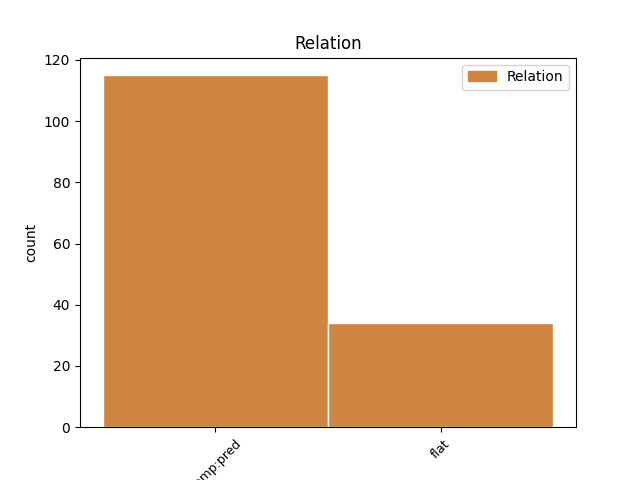
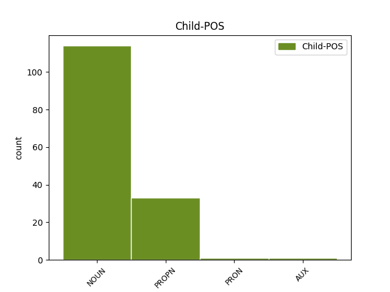

Distribution of features within this leaf



Agreement Rules sorted by frequency.
- When the dependent token is the predicative complements(comp:pred) of the head token, and the dependent token is NOUN.
1 Dindan _ _ _ _ 0 _ _ _
2 e _ _ _ _ 0 _ _ _
3 furm _ _ _ _ 0 _ _ _
4 ordinal _ _ _ _ 0 _ _ _
5 é é AUX _ Gender=Masc|Number=Sing|Person=3 0 _ _ _
6 an _ _ _ _ 0 _ _ _
7 drougsant drougsant NOUN _ Case=NomAcc|Definite=Def|Gender=Masc|Number=Sing 5 comp:pred _ _
8 or _ _ _ _ 0 _ _ _
9 hleñved _ _ _ _ 0 _ _ _
10 - _ _ _ _ 0 _ _ _
11 spéred _ _ _ _ 0 _ _ _
12 hale _ _ _ _ 0 _ _ _
13 - _ _ _ _ 0 _ _ _
14 ouenn _ _ _ _ 0 _ _ _
15 , _ _ _ _ 0 _ _ _
16 pe _ _ _ _ 0 _ _ _
17 ablam _ _ _ _ 0 _ _ _
18 da _ _ _ _ 0 _ _ _
19 labéiou _ _ _ _ 0 _ _ _
20 ban _ _ _ _ 0 _ _ _
21 empenn _ _ _ _ 0 _ _ _
22 . _ _ _ _ 0 _ _ _
1 Slobodan _ _ _ _ 0 _ _ _
2 Milošević _ _ _ _ 0 _ _ _
3 , _ _ _ _ 0 _ _ _
4 e _ _ _ _ 0 _ _ _
5 lizherenneg _ _ _ _ 0 _ _ _
6 serb _ _ _ _ 0 _ _ _
7 kirillek _ _ _ _ 0 _ _ _
8 Слободан Слободан PROPN _ Case=Nom|Gender=Masc|Number=Sing 0 _ _ _
9 Милошевић. Милошевић. PROPN _ Case=Nom|Gender=Masc|Number=Sing 8 flat _ _
1 Noel _ _ _ _ 0 _ _ _
2 Gallagher _ _ _ _ 0 _ _ _
3 ( _ _ _ _ 0 _ _ _
4 gitarour _ _ _ _ 0 _ _ _
5 Oasis _ _ _ _ 0 _ _ _
6 ) _ _ _ _ 0 _ _ _
7 a _ _ _ _ 0 _ _ _
8 voe _ AUX _ Gender=Masc|Number=Sing|Person=3|Tense=Past 0 _ _ _
9 é é PRON _ Gender=Masc|Number=Sing|Person=3 8 comp:pred _ _
10 seniñ _ _ _ _ 0 _ _ _
11 getoñ _ _ _ _ 0 _ _ _
12 ivez _ _ _ _ 0 _ _ _
13 , _ _ _ _ 0 _ _ _
14 er _ _ _ _ 0 _ _ _
15 sonenn _ _ _ _ 0 _ _ _
16 " _ _ _ _ 0 _ _ _
17 Keep _ _ _ _ 0 _ _ _
18 What _ _ _ _ 0 _ _ _
19 Ya _ _ _ _ 0 _ _ _
20 Got _ _ _ _ 0 _ _ _
21 " _ _ _ _ 0 _ _ _
22 ( _ _ _ _ 0 _ _ _
23 single _ _ _ _ 0 _ _ _
24 ) _ _ _ _ 0 _ _ _
25 . _ _ _ _ 0 _ _ _
1 Galia _ _ _ _ 0 _ _ _
2 en _ _ _ _ 0 _ _ _
3 Impalaeriezh impalaeriezh NOUN _ Gender=Com|Number=Sing 0 _ _ _
4 roman roman NOUN _ Gender=Com|Number=Sing 3 flat _ _
5 . _ _ _ _ 0 _ _ _
1 Un _ _ _ _ 0 _ _ _
2 ezel _ _ _ _ 0 _ _ _
3 eo is AUX _ Case=Abl|Gender=Masc|Number=Sing|Person=3|PronType=Prs 4 comp:pred _ _
4 eus eus AUX _ Gender=Masc|Number=Sing|PronType=Int 0 _ _ _
5 ar _ _ _ _ 0 _ _ _
6 Broadoù _ _ _ _ 0 _ _ _
7 Unanet _ _ _ _ 0 _ _ _
8 , _ _ _ _ 0 _ _ _
9 WMO _ _ _ _ 0 _ _ _
10 , _ _ _ _ 0 _ _ _
11 UNICEF _ _ _ _ 0 _ _ _
12 , _ _ _ _ 0 _ _ _
13 GUAM _ _ _ _ 0 _ _ _
14 . _ _ _ _ 0 _ _ _
Disagree Examples:
1 Sportverlag Sportverlag PROPN _ Case=Nom|Gender=Masc|Number=Sing 0 _ _ _
2 Berlin Berlin PROPN _ Case=Nom|Gender=Neut|Number=Sing 1 flat _ _
3 , _ _ _ _ 0 _ _ _
4 1991 _ _ _ _ 0 _ _ _
5 . _ _ _ _ 0 _ _ _
1 Gwelout gwelout NOUN _ Gender=Neut|Number=Sing 0 _ _ _
2 Luksembourg Luksembourg PROPN _ Gender=Com|Number=Sing 1 flat _ _
3 ( _ _ _ _ 0 _ _ _
4 bro _ _ _ _ 0 _ _ _
5 ) _ _ _ _ 0 _ _ _
1 An _ _ _ _ 0 _ _ _
2 Dud _ _ _ _ 0 _ _ _
3 hag _ _ _ _ 0 _ _ _
4 an _ _ _ _ 0 _ _ _
5 Drolled _ _ _ _ 0 _ _ _
6 eo is AUX _ Case=Abl|Gender=Masc|Number=Sing|Person=3|PronType=Prs 0 _ _ _
7 annezidi annezidi NOUN _ Case=NomAcc|Gender=Fem|Number=Plur 6 comp:pred _ _
8 bennañ _ _ _ _ 0 _ _ _
9 Troy _ _ _ _ 0 _ _ _
10 . _ _ _ _ 0 _ _ _
1 An _ _ _ _ 0 _ _ _
2 Aotrou _ _ _ _ 0 _ _ _
3 Loeiz _ _ _ _ 0 _ _ _
4 Tournel _ _ _ _ 0 _ _ _
5 a _ _ _ _ 0 _ _ _
6 oa oa AUX _ Case=NomAcc|Form=Len|Gender=Fem|Number=Sing 0 _ _ _
7 maer maer NOUN _ Case=NomAcc|Gender=Masc|Number=Sing 6 comp:pred _ _
8 . _ _ _ _ 0 _ _ _